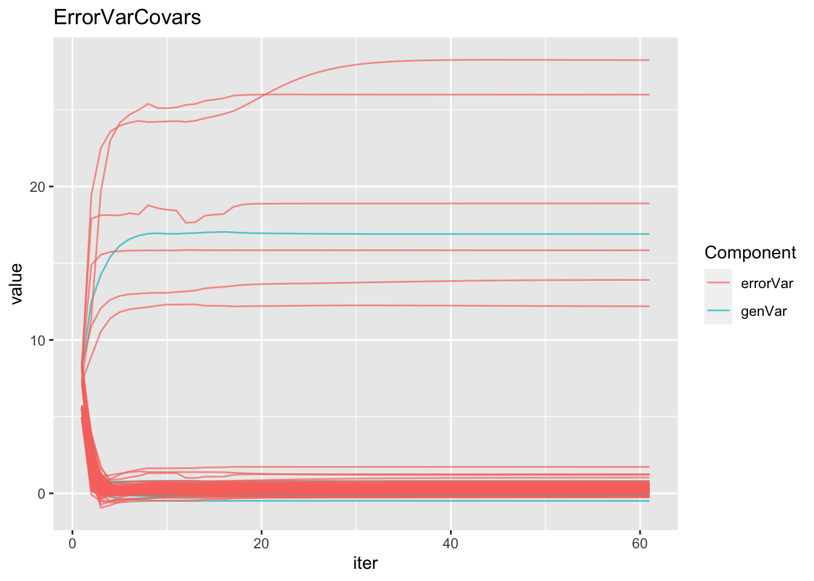
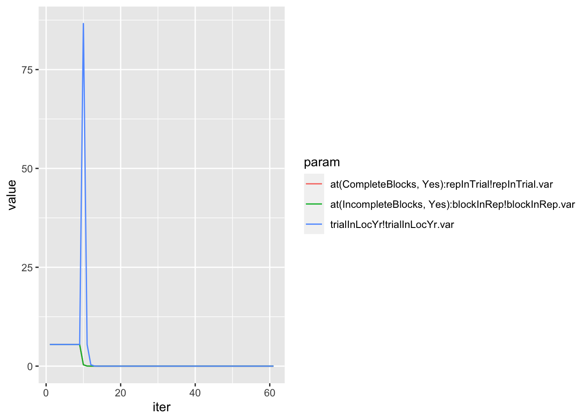
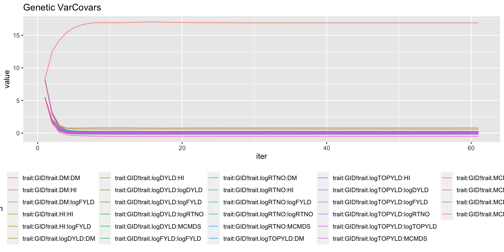
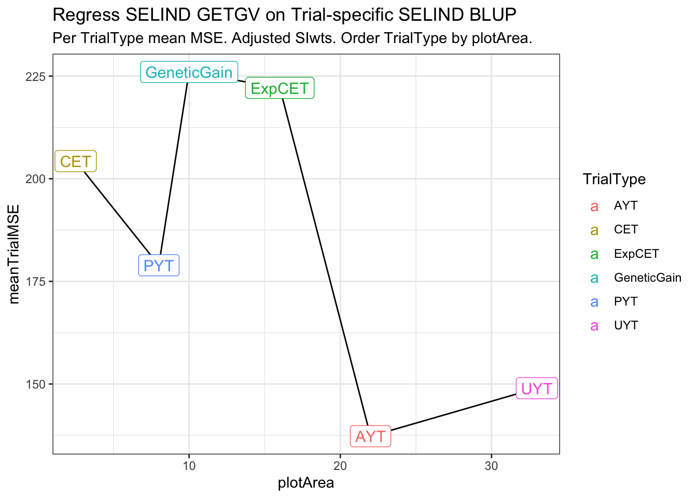
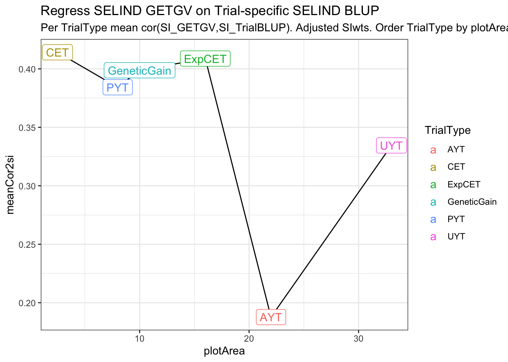

Empirical inputs for simulations - IITA
2021-Aug-13
Last updated: 2021-08-26
Checks: 7 0
Knit directory: IITA_2021GS/
This reproducible R Markdown analysis was created with workflowr (version 1.6.2). The Checks tab describes the reproducibility checks that were applied when the results were created. The Past versions tab lists the development history.
Great! Since the R Markdown file has been committed to the Git repository, you know the exact version of the code that produced these results.
Great job! The global environment was empty. Objects defined in the global environment can affect the analysis in your R Markdown file in unknown ways. For reproduciblity it’s best to always run the code in an empty environment.
The command set.seed(20210504) was run prior to running the code in the R Markdown file. Setting a seed ensures that any results that rely on randomness, e.g. subsampling or permutations, are reproducible.
Great job! Recording the operating system, R version, and package versions is critical for reproducibility.
Nice! There were no cached chunks for this analysis, so you can be confident that you successfully produced the results during this run.
Great job! Using relative paths to the files within your workflowr project makes it easier to run your code on other machines.
Great! You are using Git for version control. Tracking code development and connecting the code version to the results is critical for reproducibility.
The results in this page were generated with repository version 1a785f3. See the Past versions tab to see a history of the changes made to the R Markdown and HTML files.
Note that you need to be careful to ensure that all relevant files for the analysis have been committed to Git prior to generating the results (you can use wflow_publish or wflow_git_commit). workflowr only checks the R Markdown file, but you know if there are other scripts or data files that it depends on. Below is the status of the Git repository when the results were generated:
Ignored files:
Ignored: .DS_Store
Ignored: .Rhistory
Ignored: .Rproj.user/
Ignored: analysis/.DS_Store
Ignored: code/.DS_Store
Ignored: data/.DS_Store
Untracked files:
Untracked: data/DatabaseDownload_2021Aug08/
Untracked: data/DatabaseDownload_2021May04/
Untracked: data/GBSdataMasterList_31818.csv
Untracked: data/IITA_GBStoPhenoMaster_33018.csv
Untracked: data/NRCRI_GBStoPhenoMaster_40318.csv
Untracked: data/PedigreeGeneticGainCycleTime_aafolabi_01122020.xls
Untracked: data/Report-DCas21-6038/
Untracked: data/blups_forGP.rds
Untracked: data/chr1_RefPanelAndGSprogeny_ReadyForGP_72719.fam
Untracked: data/dosages_IITA_2021Aug09.rds
Untracked: data/haps_IITA_2021Aug09.rds
Untracked: data/recombFreqMat_1minus2c_2021Aug02.qs
Untracked: output/
Note that any generated files, e.g. HTML, png, CSS, etc., are not included in this status report because it is ok for generated content to have uncommitted changes.
These are the previous versions of the repository in which changes were made to the R Markdown (analysis/inputsForSimulationV2.Rmd) and HTML (docs/inputsForSimulationV2.html) files. If you’ve configured a remote Git repository (see ?wflow_git_remote), click on the hyperlinks in the table below to view the files as they were in that past version.
| File | Version | Author | Date | Message |
|---|---|---|---|---|
| Rmd | 1a785f3 | wolfemd | 2021-08-26 | Typo fixes plus save outputs for future sim inputs |
| html | ceae21a | wolfemd | 2021-08-26 | Build site. |
| Rmd | c2c7dae | wolfemd | 2021-08-26 | Update site with new version of inputs for simulations including 2 approaches now. |
| Rmd | 8db43ac | wolfemd | 2021-08-26 | Revised empirical analysis for sim inputs. Two approaches: direct estimate with mixed model + indirect with SI_GETGV on SI_TrialBLUP. |
Estimate selection error
Approach 1: direct estimation with multivar mixed model
Try a multivariate model with the proper error and other heterogeneous variances.
This will be for DIRECT calculation, if I can get the models to converge, of the variance components of interest.
Goal is to get estimate of errorCov matrix per stage.
Then compute SI errorVar per stage.
Things not modeled, which could be input to sims:
- GxL, GxYr, GxYrxL variance
- genCor among locs
screen;
cd ~/IITA_2021GS/;
salloc -n 8 --mem=60G --time=06:00:00;
export PATH=/programs/R-4.0.5clean-p/bin:$PATH
export OMP_NUM_THREADS=8
R;library(genomicMateSelectR);
library(tidyverse)
# CLEANED PLOT-LEVEL TRIAL DATA
dbdata<-readRDS(here::here("output","IITA_ExptDesignsDetected_2021Aug08.rds"))
# SELECTION INDEX WEIGHTS
SIwts<-c(logFYLD=20,
HI=10,
DM=15,
MCMDS=-10,
logRTNO=12,
logDYLD=20,
logTOPYLD=15,
PLTHT=10)
# FILTER TRIALS TO-BE-CONSIDERED
### Restrict consideration to >2012
### to measure the selection error during the current "era" at IITA.
### Only trials with >=50% genotyped and key TrialTypes
### Keep only trials with full plotWidth and plotLength meta-data
### Calc plotArea=plotWidth*plotLength (in meters-squared)
trialdata<-dbdata %>%
filter(studyYear>=2013,
!is.na(MaxNOHAV),
!is.na(plotWidth),
!is.na(plotLength),
!is.na(PropNOHAV)) %>%
nest(TrialData=-c(studyName,TrialType,plotWidth,plotLength,CompleteBlocks,IncompleteBlocks,MaxNOHAV)) %>%
mutate(propGenotyped=map_dbl(TrialData,
~length(which(!is.na(unique(.$FullSampleName))))/length(unique(.$GID))),
plotArea=plotWidth*plotLength,
IncompleteBlocks=ifelse(IncompleteBlocks==TRUE,"Yes","No"),
CompleteBlocks=ifelse(CompleteBlocks==TRUE,"Yes","No")) %>%
filter(propGenotyped>=0.5,
TrialType %in% c("GeneticGain","CET","ExpCET","PYT","AYT","UYT")) %>%
unnest(TrialData) %>%
select(yearInLoc,studyName,studyYear,locationName,TrialType,
plotArea,plotWidth,plotLength,
CompleteBlocks,IncompleteBlocks,observationUnitDbId,
GID,trialInLocYr,repInTrial,blockInRep,PropNOHAV,MaxNOHAV,
all_of(names(SIwts)))
trialdata %>% nrow(.) %>% paste0(.," plots"); [1] "108254 plots"# [1] "108254 plots"
trialdata %>% distinct(studyName) %>% nrow(.) %>% paste0(.," trials");[1] "382 trials"# [1] "382 trials"Filters applied to the data-to-be-considered:
studyYear>=2013propGenotyped>=0.5TrialType %in% c("GeneticGain","CET","ExpCET","PYT","AYT","UYT")- Must have plotLength, plotWidth and MaxNOHAV meta-data.
It turns out, most IITA trials at least already have this.
trialdata %>%
distinct(studyYear,locationName,studyName,TrialType,CompleteBlocks,IncompleteBlocks,plotArea,MaxNOHAV) %>%
mutate(TrialType=factor(TrialType,levels=c("CrossingBlock","GeneticGain","CET","ExpCET","PYT","AYT","UYT","NCRP"))) %>%
ggplot(.,aes(x=TrialType,y=plotArea,fill=TrialType)) +
geom_boxplot(notch = T) +
theme_bw() + theme(axis.text.x = element_text(angle=45,vjust=.5)) +
labs(title = "Plot Area (m-squared) by TrialType",
subtitle="plotArea = plotWidth*plotLength. studyYear>=2013")
| Version | Author | Date |
|---|---|---|
| ceae21a | wolfemd | 2021-08-26 |
trialdata %>%
distinct(studyYear,locationName,studyName,TrialType,CompleteBlocks,IncompleteBlocks,plotArea,MaxNOHAV) %>%
mutate(TrialType=factor(TrialType,levels=c("CrossingBlock","GeneticGain","CET","ExpCET","PYT","AYT","UYT","NCRP"))) %>%
ggplot(.,aes(x=TrialType,y=MaxNOHAV,fill=TrialType)) +
geom_boxplot(notch = T) +
theme_bw() + theme(axis.text.x = element_text(angle=45,vjust=.5)) +
labs(title = "Max number harvested as a proxy for planned plot size",
subtitle="MaxNOHAV = The maximum number stands harvested per trial. studyYear>=2013")
| Version | Author | Date |
|---|---|---|
| ceae21a | wolfemd | 2021-08-26 |
Much less clear difference between trials using MaxNOHAV.
I decided to take a narrow view of plot configurations and analyze only trials confi=orming to the common (median) plotArea for each TrialType. Does not exclude too many.
Below, I work carefully up to a multivariate model with 7 of the 8 SELIND traits. Starting with homogenous variances and one trait, then 2 traits, 2 traits + heterogenous error by TrialType, 4 + heterog. error, and finally 7 traits skipping PLTHT b/c of >50% missingness.
trialdata %<>%
semi_join(trialdata %>%
distinct(TrialType,studyName,plotArea,plotWidth,plotLength) %>%
group_by(TrialType) %>%
summarize(plotArea=median(plotArea)) %>% ungroup())
trialdata %>% nrow(.) %>% paste0(.," plots"); [1] "70301 plots"# [1] "70301 plots"
trialdata %>% distinct(studyName) %>% nrow(.) %>% paste0(.," trials");[1] "240 trials"# [1] "240 trials"trialdata %>%
distinct(TrialType,plotArea) %>%
arrange(plotArea)# A tibble: 6 × 2
TrialType plotArea
<chr> <dbl>
1 CET 2.5
2 PYT 8
3 GeneticGain 10
4 ExpCET 16
5 AYT 22
6 UYT 33 Work up to the full analysis
MultiTrialTraitData<-trialdata %>%
filter(!is.na(DM)) %>%
mutate(across(c(GID,yearInLoc,
CompleteBlocks,
IncompleteBlocks,
trialInLocYr,
repInTrial,
blockInRep),as.factor)) %>%
droplevels
fixedFormula="DM ~ yearInLoc"
randFormula=paste0("~idv(GID) + idv(trialInLocYr) + at(CompleteBlocks,'Yes'):repInTrial ",
"+ at(IncompleteBlocks,'Yes'):blockInRep")
require(asreml);
fixedFormula<-as.formula(fixedFormula)
randFormula<-as.formula(randFormula)
# fit asreml
out<-asreml(fixed = fixedFormula,
random = randFormula,
data = MultiTrialTraitData,
maxiter = 40, workspace=1000e6,
na.method.X="omit")MultiTrialTraitData<-trialdata %>%
filter(!is.na(DM),
!is.na(logFYLD)) %>%
mutate(across(c(GID,yearInLoc,
CompleteBlocks,
IncompleteBlocks,
trialInLocYr,
repInTrial,
blockInRep,
TrialType),as.factor)) %>%
droplevels
fixedFormula="cbind(DM,logFYLD) ~ yearInLoc*trait + PropNOHAV*trait"
randFormula=paste0("~us(trait,init=c(0,0,0)):GID + idv(trialInLocYr) + at(CompleteBlocks,'Yes'):repInTrial ",
"+ at(IncompleteBlocks,'Yes'):blockInRep")
errFormula=paste0("~units:us(trait,init=c(0,0,0))")
require(asreml);
fixedFormula<-as.formula(fixedFormula)
randFormula<-as.formula(randFormula)
errFormula<-as.formula(errFormula)
# fit asreml
out<-asreml(fixed = fixedFormula,
random = randFormula,
rcov = errFormula,
data = MultiTrialTraitData,
maxiter = 40, workspace=1000e6)fixedFormula="cbind(DM,logFYLD) ~ yearInLoc*trait + PropNOHAV*trait"
randFormula=paste0("~us(trait,init=c(0,0,0)):GID + idv(trialInLocYr) + at(CompleteBlocks,'Yes'):repInTrial ",
"+ at(IncompleteBlocks,'Yes'):blockInRep")
errFormula=paste0("~units:at(TrialType):us(trait,init=c(0,0,0))")
require(asreml);
fixedFormula<-as.formula(fixedFormula)
randFormula<-as.formula(randFormula)
errFormula<-as.formula(errFormula)
# fit asreml
out<-asreml(fixed = fixedFormula,
random = randFormula,
rcov = errFormula,
data = MultiTrialTraitData %>% arrange(TrialType),
maxiter = 40, workspace=1000e6)# Check the proportion missing for each trait
trialdata %>%
summarize(across(any_of(names(SIwts)),~length(which(is.na(.)))/length(.)))
# logFYLD HI DM MCMDS logRTNO logDYLD logTOPYLD PLTHT
# <dbl> <dbl> <dbl> <dbl> <dbl> <dbl> <dbl> <dbl>
# 1 0.0166 0.0327 0.101 0.00613 0.0104 0.109 0.0186 0.544
MultiTrialTraitData<-trialdata %>%
# filter(!is.na(DM),
# !is.na(logFYLD)) %>%
mutate(across(c(GID,yearInLoc,
CompleteBlocks,
IncompleteBlocks,
trialInLocYr,
repInTrial,
blockInRep,
TrialType),as.factor)) %>%
droplevels
fixedFormula="cbind(DM,logFYLD,MCMDS,logTOPYLD) ~ yearInLoc*trait + PropNOHAV*trait"
randFormula=paste0("~us(trait):GID + ",
"idv(trialInLocYr) + at(CompleteBlocks,'Yes'):repInTrial ",
"+ at(IncompleteBlocks,'Yes'):blockInRep")
errFormula=paste0("~units:at(TrialType):us(trait)")
require(asreml);
fixedFormula<-as.formula(fixedFormula)
randFormula<-as.formula(randFormula)
errFormula<-as.formula(errFormula)
# fit asreml
out<-asreml(fixed = fixedFormula,
random = randFormula,
rcov = errFormula,
data = MultiTrialTraitData %>% arrange(TrialType),
maxiter = 40, workspace=1000e6)
names(SIwts)Full multi-trait model
7 traits. Heterogeneous error by TrialType. Skip PLTHT b/c >50% missing data.
# Check the proportion missing for each trait
trialdata %>%
summarize(across(any_of(names(SIwts)),~length(which(is.na(.)))/length(.)))
# logFYLD HI DM MCMDS logRTNO logDYLD logTOPYLD PLTHT
# <dbl> <dbl> <dbl> <dbl> <dbl> <dbl> <dbl> <dbl>
# 1 0.0166 0.0327 0.101 0.00613 0.0104 0.109 0.0186 0.544
# SKIP ONLY PLTHT B/C AMOUNT MISSING...
MultiTrialTraitData<-trialdata %>%
mutate(across(c(GID,yearInLoc,
CompleteBlocks,
IncompleteBlocks,
trialInLocYr,
repInTrial,
blockInRep,
TrialType),as.factor)) %>%
droplevels
fixedFormula="cbind(logFYLD,HI,DM,MCMDS,logRTNO,logDYLD,logTOPYLD) ~ yearInLoc*trait + PropNOHAV*trait"
randFormula=paste0("~us(trait):GID + ",
"idv(trialInLocYr) + at(CompleteBlocks,'Yes'):repInTrial ",
"+ at(IncompleteBlocks,'Yes'):blockInRep")
errFormula=paste0("~units:at(TrialType):us(trait)")
require(asreml);
fixedFormula<-as.formula(fixedFormula)
randFormula<-as.formula(randFormula)
errFormula<-as.formula(errFormula)
# fit asreml
out<-asreml(fixed = fixedFormula,
random = randFormula,
rcov = errFormula,
data = MultiTrialTraitData %>% arrange(TrialType),
maxiter = 60, workspace=1000e6)
saveRDS(out,file=here::here("output","estimateErrorCov_byTrialType_asreml_2021Aug25.rds"))
as_summary<-summary(out)
saveRDS(as_summary,file=here::here("output","estimateErrorCov_byTrialType_asreml_summary_2021Aug25.rds"))
#
# ASReml: Wed Aug 25 16:48:25 2021
#
# US matrix updates modified 7 times to remain positive definite.
# LogLik S2 DF wall cpu
# -552132.9648 1.0000471133 16:50:44 107.3 (199 restrained)
# Notice: NonPosDef US matrix modified
# -172985.8107 1.0000471133 16:52:02 77.5 (199 restrained)
# -11758.3924 1.0000471133 16:53:15 73.2 (199 restrained)
# 86902.0709 1.0000471133 16:54:31 76.4 (199 restrained)
# 171214.2253 1.0000471133 16:55:47 75.0 (199 restrained)
# 225677.4607 1.0000471133 16:56:57 70.1 (155 restrained)
# 260884.6336 1.0000471133 16:58:06 68.7 (148 restrained)
# 280487.3333 1.0000471133 16:59:13 67.2 (87 restrained)
# 295260.2919 1.0000471133 17:00:20 66.5 (32 restrained)
# 302995.2011 1.0000471133 17:01:30 70.4 (5 restrained)
# 311088.9518 1.0000471133 17:02:46 75.9 (4 restrained)
# Notice: NonPosDef US matrix modified
# 316645.9289 1.0000471133 17:03:59 72.2 (5 restrained)
# 324430.0701 1.0000471133 17:05:06 67.1 (2 restrained)
# 331602.8926 1.0000471133 17:06:14 67.9
# 335069.2210 1.0000471133 17:07:27 72.8
# 337425.1130 1.0000471133 17:08:50 77.6
# 339834.7415 1.0000471133 17:10:49 98.5
# 340877.5399 1.0000471133 17:13:12 114.1
# 341423.1058 1.0000471133 17:14:50 84.5
# 341734.7595 1.0000471133 17:16:00 70.2
# 341939.2189 1.0000471133 17:17:12 71.2
# 342091.3023 1.0000471133 17:18:27 75.2
# 342215.4180 1.0000471133 17:19:49 81.6
# 342322.6216 1.0000471133 17:21:38 94.1
# 342418.1298 1.0000471133 17:23:04 84.4
# 342504.5682 1.0000471133 17:24:26 79.1
# 342583.3893 1.0000471133 17:25:54 83.8
# 342655.5189 1.0000471133 17:27:22 84.5
# 342721.6172 1.0000471133 17:28:59 85.1
# 342782.2099 1.0000471133 17:30:46 90.1
# 342837.7490 1.0000471133 17:32:17 76.1
# 342888.6246 1.0000471133 17:33:23 65.9
# 342935.2019 1.0000471133 17:34:25 62.7
# 342977.8038 1.0000471133 17:35:29 63.7
# 343016.7322 1.0000471133 17:36:35 65.5
# 343052.2701 1.0000471133 17:37:34 59.8
# 343084.6751 1.0000471133 17:38:37 63.0
# 343114.1894 1.0000471133 17:39:42 64.2
# 343141.0370 1.0000471133 17:40:46 64.7
# 343165.4329 1.0000471133 17:41:46 59.9
# 343187.5770 1.0000471133 17:42:51 64.7
# 343207.6489 1.0000471133 17:43:54 63.5
# 343225.8251 1.0000471133 17:44:58 63.8
# 343242.2660 1.0000471133 17:46:06 67.9
# 343257.1194 1.0000471133 17:47:25 77.2
# 343270.5287 1.0000471133 17:48:49 76.7
# 343282.6168 1.0000471133 17:50:12 81.2
# 343293.5105 1.0000471133 17:51:18 66.5
# 343303.3166 1.0000471133 17:52:25 66.2
# 343312.1366 1.0000471133 17:53:44 75.7
# 343320.0631 1.0000471133 17:55:06 80.0
# 343327.1802 1.0000471133 17:56:25 74.7
# 343333.5731 1.0000471133 17:57:53 79.7
# 343339.3063 1.0000471133 17:59:17 78.3
# 343344.4459 1.0000471133 18:01:01 76.5
# 343349.0523 1.0000471133 18:02:05 64.3
# 343353.1798 1.0000471133 18:03:08 63.0
# 343356.8724 1.0000471133 18:04:13 64.6
# 343360.1798 1.0000471133 18:05:19 66.5
# 343363.1377 1.0000471133 18:06:29 70.0
# US variance structures were modified in 51 instances to make them positive definite
#
# Finished on: Wed Aug 25 18:06:31 2021
#
# LogLikelihood not convergedIndependent but heterogeneous error covariances were fit by TrialType. After 40 iterations (~30 minutes), likelihood wasn’t converged… but looks on the way.
Result
asfit<-readRDS(file=here::here("output","estimateErrorCov_byTrialType_asreml_2021Aug25.rds"))
as_summary<-readRDS(file=here::here("output","estimateErrorCov_byTrialType_asreml_summary_2021Aug25.rds"))
varcomps<-as_summary$varcomp %>%
rownames_to_column(var = "VarComp") %>%
select(VarComp,component)
# SELECTION INDEX WEIGHTS
SIwts<-c(logFYLD=20,
HI=10,
DM=15,
MCMDS=-10,
logRTNO=12,
logDYLD=20,
logTOPYLD=15)
# PLTHT=10)
adjSIwts<-trialdata %>%
summarize(across(all_of(names(SIwts)),~sqrt(var(.,na.rm=T)))) %>%
magrittr::divide_by(SIwts,.) %>%
as.numeric() %>%
`names<-`(.,names(SIwts))SIwts, specified by breeder as relative importances, essentially.
Try adjusting weights by dividing by Trait Std. Devs.
Trait Standard Deviations:
trialdata %>%
summarize(across(all_of(names(SIwts)),~sqrt(var(.,na.rm=T)),.names = paste0("sd_","{.col}")));# A tibble: 1 × 7
sd_logFYLD sd_HI sd_DM sd_MCMDS sd_logRTNO sd_logDYLD sd_logTOPYLD
<dbl> <dbl> <dbl> <dbl> <dbl> <dbl> <dbl>
1 0.892 0.142 5.80 0.787 0.879 0.866 0.798Adjusted Weights:
adjSIwts logFYLD HI DM MCMDS logRTNO logDYLD logTOPYLD
22.422466 70.381762 2.584201 -12.706449 13.656355 23.096896 18.790244 errorVars<-varcomps %>%
filter(grepl("TrialType",VarComp),
grepl("!trait.",VarComp)) %>%
separate(VarComp,c("TrialType","VarParam"),"!trait.",remove = T) %>%
separate(VarParam,c("Trait1","Trait2"),":",remove = T) %>%
mutate(TrialType=gsub("TrialType_","",TrialType)) %>%
nest(VarEsts=c(Trait1,Trait2,component))
errorVars %<>%
mutate(siErrorVarEst=map_dbl(VarEsts,
function(VarEsts,SIwts){
covMat<-VarEsts %>%
spread(Trait2,component) %>%
column_to_rownames("Trait1") %>%
as.matrix() %>%
.[names(SIwts),names(SIwts)]
covMat[upper.tri(covMat)]<-t(covMat)[upper.tri(covMat)]
siError<-SIwts%*%covMat%*%SIwts
return(siError) },SIwts=SIwts))errorVars %>%
left_join(trialdata %>%
distinct(TrialType,plotArea)) %>%
arrange(plotArea) %>%
ggplot(.,aes(x=plotArea,y=siErrorVarEst)) + geom_line() + theme_bw() +
geom_label(aes(label=TrialType,color=TrialType),size=4) +
labs(title = "Unadjusted SIwts - siError vs. plotArea")
| Version | Author | Date |
|---|---|---|
| ceae21a | wolfemd | 2021-08-26 |
adjErrorVars<-varcomps %>%
filter(grepl("TrialType",VarComp),
grepl("!trait.",VarComp)) %>%
separate(VarComp,c("TrialType","VarParam"),"!trait.",remove = T) %>%
separate(VarParam,c("Trait1","Trait2"),":",remove = T) %>%
mutate(TrialType=gsub("TrialType_","",TrialType)) %>%
nest(VarEsts=c(Trait1,Trait2,component))
adjErrorVars %<>%
mutate(siErrorVarEst=map_dbl(VarEsts,
function(VarEsts,SIwts){
covMat<-VarEsts %>%
spread(Trait2,component) %>%
column_to_rownames("Trait1") %>%
as.matrix() %>%
.[names(SIwts),names(SIwts)]
covMat[upper.tri(covMat)]<-t(covMat)[upper.tri(covMat)]
siError<-SIwts%*%covMat%*%SIwts
return(siError) },SIwts=adjSIwts))
saveRDS(adjErrorVars,file=here::here("output","siErrorVarEst_byTrialType_directApproach_2021Aug25.rds"))adjErrorVars %>%
left_join(trialdata %>%
distinct(TrialType,plotArea)) %>%
arrange(plotArea) %>%
ggplot(.,aes(x=plotArea,y=siErrorVarEst)) + geom_line() + theme_bw() +
geom_label(aes(label=TrialType,color=TrialType),size=4) +
labs(title = "Adjusted SIwts - siError vs. plotArea")
| Version | Author | Date |
|---|---|---|
| ceae21a | wolfemd | 2021-08-26 |
Convergence check
asfit$monitor["loglik",] %>%
as.numeric %>% plot(.,ylab='loglik',xlab='iter')
| Version | Author | Date |
|---|---|---|
| ceae21a | wolfemd | 2021-08-26 |
asfit$monitor %>%
as.data.frame %>%
rownames_to_column("param") %>%
select(-constraint) %>%
pivot_longer(cols=-c("param"),names_to="iter",values_to="value") %>%
mutate(iter=as.numeric(iter)) %>%
filter(grepl("!trait",param)) %>%
mutate(Component=ifelse(grepl("GID!trait",param),"genVar","errorVar")) %>%
ggplot(.,aes(x=iter,y=value,group=param,color=Component)) + geom_line(alpha=0.7) +
labs(title="ErrorVarCovars")#geom_label(aes(label=param))
| Version | Author | Date |
|---|---|---|
| ceae21a | wolfemd | 2021-08-26 |
asfit$monitor %>%
as.data.frame %>%
rownames_to_column("param") %>%
select(-constraint) %>%
pivot_longer(cols=-c("param"),names_to="iter",values_to="value") %>%
mutate(iter=as.numeric(iter)) %>%
filter(!grepl("!trait|!variance|loglik|S2|df",param)) %>%
ggplot(.,aes(x=iter,y=value,group=param,color=param)) + geom_line()
| Version | Author | Date |
|---|---|---|
| ceae21a | wolfemd | 2021-08-26 |
asfit$monitor %>%
as.data.frame %>%
rownames_to_column("param") %>%
select(-constraint) %>%
pivot_longer(cols=-c("param"),names_to="iter",values_to="value") %>%
mutate(iter=as.numeric(iter)) %>%
filter(grepl("!trait",param)) %>%
mutate(Component=ifelse(grepl("GID!trait",param),"genVar","errorVar")) %>%
filter(Component=="genVar") %>%
ggplot(.,aes(x=iter,y=value,group=param,color=param)) + geom_line(alpha=0.7) +
labs(title="Genetic VarCovars") + theme(legend.position = 'bottom')
| Version | Author | Date |
|---|---|---|
| ceae21a | wolfemd | 2021-08-26 |
Approach 2: indirect - regress SI GETGV on Trial-specific SI BLUP
This will be a revised version of the original version of this approach, which is documented here.
Changes:
- Analyze the same subset of trials chosen in Approach 1 above, which is more restrictively chosen than the previous analysis
- Adopt a SI weighting scheme for computing the Trial-specific SI with BLUPs, which is invariant to which traits are observed
- Categorize trials according to
plotAreaand/orTrialType
Procedure:
Use the SELECTION INDEX GETGV from genomic prediction using all entire available training population and all of the latest available data as a best estimate of “true” net merit
For each trial, analyze the cleaned plot-basis data:
Fit a univariate mixed-model to each trait scored
Extract trial-specific BLUPs for whatever clones were present
Compute the SELIND for the current trial using BLUPs for whatever component traits were scored (\(SI_{TrialBLUP}\)).
- Scale weights so their sum always equals the sum of the full set of weights, even when only subsets of traits are present.
Regress \(SI_{GETGV}\) on the \(SI_{TrialBLUP}\)
Extract the \(\hat{\sigma}^2_e\) of the regression as the trial-specific estimate of the selection error
Use mean (or median) \(\hat{\sigma}^2_e\) for each TrialType / plotArea as potential simulation input. Consider a weighted mean/median according to number of clones available to measure \(\hat{\sigma}^2_e\) for each trial.
screen;
cd ~/IITA_2021GS/;
salloc -n 20 --mem=60G --time=06:00:00;
#export PATH=/programs/R-4.0.5clean-p/bin:$PATH
#export OMP_NUM_THREADS=8
R;library(genomicMateSelectR);
library(tidyverse)
# CLEANED PLOT-LEVEL TRIAL DATA
dbdata<-readRDS(here::here("output","IITA_ExptDesignsDetected_2021Aug08.rds"))
# SELECTION INDEX WEIGHTS
SIwts<-c(logFYLD=20,
HI=10,
DM=15,
MCMDS=-10,
logRTNO=12,
logDYLD=20,
logTOPYLD=15) # ,PLTHT=10)
# FILTER TRIALS TO-BE-CONSIDERED
### Restrict consideration to >2012
### to measure the selection error during the current "era" at IITA.
### Only trials with >=50% genotyped and key TrialTypes
### Keep only trials with full plotWidth and plotLength meta-data
### Calc plotArea=plotWidth*plotLength (in meters-squared)
trialdata<-dbdata %>%
filter(studyYear>=2013,
!is.na(MaxNOHAV),
!is.na(plotWidth),
!is.na(plotLength),
!is.na(PropNOHAV)) %>%
nest(TrialData=-c(studyName,TrialType,plotWidth,plotLength,CompleteBlocks,IncompleteBlocks,MaxNOHAV)) %>%
mutate(propGenotyped=map_dbl(TrialData,
~length(which(!is.na(unique(.$FullSampleName))))/length(unique(.$GID))),
plotArea=plotWidth*plotLength,
IncompleteBlocks=ifelse(IncompleteBlocks==TRUE,"Yes","No"),
CompleteBlocks=ifelse(CompleteBlocks==TRUE,"Yes","No")) %>%
filter(propGenotyped>=0.5,
TrialType %in% c("GeneticGain","CET","ExpCET","PYT","AYT","UYT")) %>%
unnest(TrialData) %>%
select(yearInLoc,studyName,studyYear,locationName,TrialType,
plotArea,plotWidth,plotLength,
CompleteBlocks,IncompleteBlocks,observationUnitDbId,
GID,trialInLocYr,repInTrial,blockInRep,PropNOHAV,MaxNOHAV,
all_of(names(SIwts)))
trialdata %<>%
semi_join(trialdata %>%
distinct(TrialType,studyName,plotArea,plotWidth,plotLength) %>%
group_by(TrialType) %>%
summarize(plotArea=median(plotArea)) %>% ungroup())
### ADJUSTED SELIND WEIGHTS
adjSIwts<-trialdata %>%
summarize(across(all_of(names(SIwts)),~sqrt(var(.,na.rm=T)))) %>%
magrittr::divide_by(SIwts,.) %>%
as.numeric() %>%
`names<-`(.,names(SIwts))
# SELIND GETGVS (for input to estimateSelectionError func below)
gpreds<-readRDS(file = here::here("output","genomicPredictions_full_set_2021Aug09.rds"))
getgvs<-gpreds$gblups[[1]] %>%
filter(predOf=="GETGV") %>%
select(GID,SELIND,all_of(names(SIwts)))
siadj_getgvs<-getgvs %>%
mutate(SELIND=as.numeric(getgvs %>%
select(-SELIND,-GID) %>%
as.matrix(.)%*%adjSIwts)) %>%
select(GID,SELIND)
si_getgvs<-getgvs %>%
select(GID,SELIND)
trialdata %<>%
nest(TrialData=-c(studyYear,locationName,studyName,TrialType,CompleteBlocks,IncompleteBlocks,MaxNOHAV,plotArea))
# SOURCE FUNCTION estimateSelectionError()
source(here::here("code","estimateSelectionError.R"))###### unit test inputs for estimateSelectionError
# TrialData<-trialdata$TrialData[[1]]
# CompleteBlocks<-trialdata$CompleteBlocks[[1]]
# IncompleteBlocks<-trialdata$IncompleteBlocks[[1]]
# getgvs<-si_getgvs
# TrialData<-trialdata %>% filter(propGenotyped>0.75) %>% slice(4) %$% TrialData[[1]]
# CompleteBlocks<-trialdata %>% filter(propGenotyped>0.75) %>% slice(4) %$% CompleteBlocks[[1]]
# IncompleteBlocks<-trialdata %>% filter(propGenotyped>0.75) %>% slice(4) %$% IncompleteBlocks[[1]]
# ncores=4
# rm(TrialData,CompleteBlocks,IncompleteBlocks)Run function estimateSelectionError() across trials to estimation selection errors.
Two runs: once with “original” SIwts, also with adjusted SIwts and SI_GETGVs.
# ORIGINAL SIwts
require(furrr); plan(multisession, workers = 20)
options(future.globals.maxSize=+Inf); options(future.rng.onMisuse="ignore")
trialdata %<>%
mutate(SelectionError=future_pmap(.,estimateSelectionError,
SIwts=SIwts,getgvs=si_getgvs))
plan(sequential)
saveRDS(trialdata,here::here("output","estimateSelectionError_origSIwts_2021Aug24.rds"))
# ADJUSTED SIwts
require(furrr); plan(multisession, workers = 20)
options(future.globals.maxSize=+Inf); options(future.rng.onMisuse="ignore")
trialdata %<>%
mutate(SelectionError=future_pmap(.,estimateSelectionError,
SIwts=adjSIwts,getgvs=siadj_getgvs))
plan(sequential)
saveRDS(trialdata,here::here("output","estimateSelectionError_adjSIwts_2021Aug24.rds"))estSelError_adj<-readRDS(here::here("output","estimateSelectionError_adjSIwts_2021Aug24.rds"))
estSelError_adj %<>%
select(-TrialData) %>%
unnest(SelectionError) %>%
select(-SI_BLUPs,-BLUPs,-SelectionError) %>%
filter(!is.na(TrialMSE))
estSelError<-readRDS(here::here("output","estimateSelectionError_origSIwts_2021Aug24.rds"))
estSelError %<>%
select(-TrialData) %>%
unnest(SelectionError) %>%
select(-SI_BLUPs,-BLUPs,-SelectionError) %>%
filter(!is.na(TrialMSE))Use mean (or median) \(\hat{\sigma}^2_e\) for each TrialType / plotArea as potential simulation input. Consider a weighted mean/median according to number of clones available to measure \(\hat{\sigma}^2_e\) for each trial.
estSelError_adj %>%
ggplot(.,aes(x=plotArea,y=TrialMSE, size=NcloneForReg, fill=TrialType)) +
geom_boxplot(notch = T) + theme_bw() +
labs(title="Distributions of TrialMSE by TrialType (sorted by plotArea)",
subtitle="From regression of SI_GETGV on Trial-specific SI_BLUP.")
| Version | Author | Date |
|---|---|---|
| ceae21a | wolfemd | 2021-08-26 |
Compute per TrialType means:
meanTrialMSE: from regression of SI_GETGV on Trial-specific SI_BLUPmeanCor2si: correlation b/t SI_GETGV and Trial-specific SI_BLUP- weighted by
NcloneForReg: the number of clones in a trial that had data to compute SELIND.
estSelError_adj_summarized<-estSelError_adj %>%
group_by(TrialType,plotArea) %>%
summarize(meanTrialMSE=weighted.mean(TrialMSE,w = NcloneForReg),
meanCor2si=weighted.mean(cor2si,w = NcloneForReg,na.rm = T)) %>%
arrange(plotArea)
saveRDS(estSelError_adj_summarized,file=here::here("output","siErrorVarEst_byTrialType_indirectApproach_2021Aug25.rds"))
estSelError_adj_summarized# A tibble: 6 × 4
# Groups: TrialType [6]
TrialType plotArea meanTrialMSE meanCor2si
<chr> <dbl> <dbl> <dbl>
1 CET 2.5 204. 0.414
2 PYT 8 179. 0.384
3 GeneticGain 10 226. 0.399
4 ExpCET 16 222. 0.409
5 AYT 22 137. 0.188
6 UYT 33 149. 0.335estSelError_adj_summarized %>%
ggplot(.,aes(x=plotArea,y=meanTrialMSE)) + geom_line() + theme_bw() +
geom_label(aes(label=TrialType,color=TrialType),size=4) +
labs(title = "Regress SELIND GETGV on Trial-specific SELIND BLUP",
subtitle = "Per TrialType mean MSE. Adjusted SIwts. Order TrialType by plotArea.")
| Version | Author | Date |
|---|---|---|
| ceae21a | wolfemd | 2021-08-26 |
estSelError_adj_summarized %>%
ggplot(.,aes(x=plotArea,y=meanCor2si)) + geom_line() + theme_bw() +
geom_label(aes(label=TrialType,color=TrialType),size=4) +
labs(title = "Regress SELIND GETGV on Trial-specific SELIND BLUP",
subtitle = "Per TrialType mean cor(SI_GETGV,SI_TrialBLUP). Adjusted SIwts. Order TrialType by plotArea.")
| Version | Author | Date |
|---|---|---|
| ceae21a | wolfemd | 2021-08-26 |
Conclusions
library(patchwork)
p1<-adjErrorVars %>%
left_join(trialdata %>%
distinct(TrialType,plotArea)) %>%
arrange(plotArea) %>%
ggplot(.,aes(x=plotArea,y=siErrorVarEst)) + geom_line() + theme_bw() +
geom_label(aes(label=TrialType,color=TrialType),size=4) +
labs(title = "Direct Estimate by Multivariate Mixed Model")
p2<-estSelError_adj_summarized %>%
ggplot(.,aes(x=plotArea,y=meanTrialMSE)) + geom_line() + theme_bw() +
geom_label(aes(label=TrialType,color=TrialType),size=4) +
labs(title = "Indirect Estimate by SELIND GETGV on Trial BLUP")
p1 + p2 +
plot_annotation(tag_levels = 'A') +
plot_layout(guides='collect') &
theme(legend.position = "bottom")
| Version | Author | Date |
|---|---|---|
| ceae21a | wolfemd | 2021-08-26 |
Above is a side-by-side plot of the key result from two approaches I have tried above for empirically estimating measurement (or selection) error relative to the selection index. The first approach (A), was to fit a multivariate mixed-model with heterogenous error covariances among TrialType. The direct approach allowed calculating the SELIND error variance (y-axis) by \(b^T\boldsymbol{R}_{TrialType}b\), where \(\boldsymbol{R}_{TrialType}\) is the TrialType-specific estimate of the error covariance matrix and \(b\) are the SELIND weights. The second approach (B) was to fit univariate mixed-models to each trait in each trial, then compute trial-specific SELIND using the resulting BLUPs. The SELIND GETGV value for all clones based on using all phenotypic data and genomic information was then regressed on each trial’s SELIND BLUPs. The mean squared error (mean residual variance) from each regression was extracted and then the average TrialMSE by TrialType was computed (y-axis, B).
We need to choose one of these two options, or revise the approach further, for use input for VDP simulations. Note that in simulation, the error variances we input will be divided by the Nrep and Nloc for each stage specific, so even if UYT has worse error than AYT overall, at the clone-level, UYT would have lower error b/c of more reps and locs.
I prefer option A / approach #1 and only hesitate that it may be challenging to successfully fit these models for each breeding program’s data.
See the baseline simulations page for downstream usage / next steps.
sessionInfo()R version 4.1.0 (2021-05-18)
Platform: x86_64-apple-darwin17.0 (64-bit)
Running under: macOS Big Sur 10.16
Matrix products: default
BLAS: /Library/Frameworks/R.framework/Versions/4.1/Resources/lib/libRblas.dylib
LAPACK: /Library/Frameworks/R.framework/Versions/4.1/Resources/lib/libRlapack.dylib
locale:
[1] en_US.UTF-8/en_US.UTF-8/en_US.UTF-8/C/en_US.UTF-8/en_US.UTF-8
attached base packages:
[1] stats graphics grDevices utils datasets methods base
other attached packages:
[1] patchwork_1.1.1 forcats_0.5.1 stringr_1.4.0
[4] readr_2.0.1 ggplot2_3.3.5 tidyverse_1.3.1
[7] genomicMateSelectR_0.2.0 purrr_0.3.4 tidyr_1.1.3
[10] dplyr_1.0.7 tibble_3.1.3 workflowr_1.6.2
loaded via a namespace (and not attached):
[1] Rcpp_1.0.7 lubridate_1.7.10 here_1.0.1 assertthat_0.2.1
[5] rprojroot_2.0.2 digest_0.6.27 utf8_1.2.2 R6_2.5.0
[9] cellranger_1.1.0 backports_1.2.1 reprex_2.0.1 evaluate_0.14
[13] highr_0.9 httr_1.4.2 pillar_1.6.2 rlang_0.4.11
[17] readxl_1.3.1 rstudioapi_0.13 whisker_0.4 jquerylib_0.1.4
[21] rmarkdown_2.10 labeling_0.4.2 munsell_0.5.0 broom_0.7.9
[25] compiler_4.1.0 httpuv_1.6.1 modelr_0.1.8 xfun_0.25
[29] pkgconfig_2.0.3 htmltools_0.5.1.1 tidyselect_1.1.1 fansi_0.5.0
[33] crayon_1.4.1 tzdb_0.1.2 dbplyr_2.1.1 withr_2.4.2
[37] later_1.2.0 grid_4.1.0 jsonlite_1.7.2 gtable_0.3.0
[41] lifecycle_1.0.0 DBI_1.1.1 git2r_0.28.0 magrittr_2.0.1
[45] scales_1.1.1 cli_3.0.1 stringi_1.7.3 farver_2.1.0
[49] fs_1.5.0 promises_1.2.0.1 xml2_1.3.2 bslib_0.2.5.1
[53] ellipsis_0.3.2 generics_0.1.0 vctrs_0.3.8 tools_4.1.0
[57] glue_1.4.2 hms_1.1.0 yaml_2.2.1 colorspace_2.0-2
[61] rvest_1.0.1 knitr_1.33 haven_2.4.3 sass_0.4.0